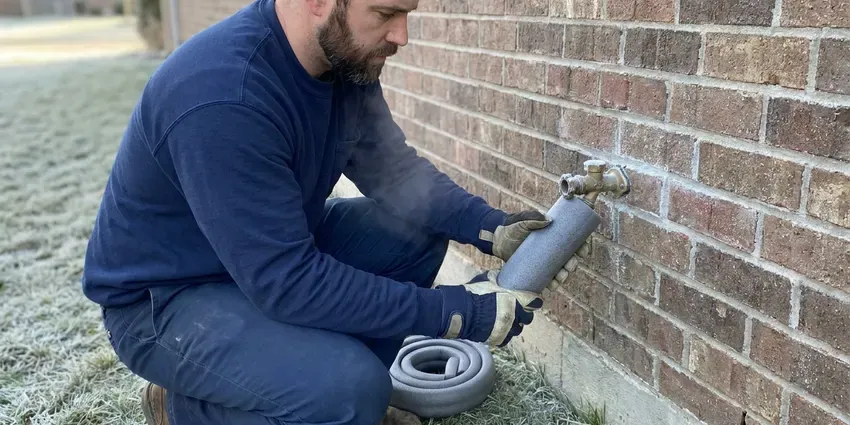

Repipe Specialists in Murfreesboro, TN
Our repipe specialists in Murfreesboro, TN reroute water lines through attics and walls so you never have to break up a slab again.
- Drywall Patching Included
- Licensed & Insured
- Code-Compliant Work
- Durable Pipe Materials

Upgrade Your Home's Plumbing for Good in Murfreesboro, TN.
One repipe can replace years of leak repairs, insurance claims and water damage cleanup.
Your Local Repipe Specialists in Murfreesboro, TN for Modern, Reliable Plumbing
BGV Plumbing is your trusted source for repipe specialists in Murfreesboro, TN. We understand the challenges older plumbing systems face, from aging materials to mineral buildup. Housing in Tennessee ranges from older homes with cast iron drains and galvanized supply lines to newer builds plumbed with PEX.
Our expertise includes:
- Type L copper repipes for homeowners who prefer metal piping
- Attic-routed PEX-A repipes with expansion fittings and manifold systems
- Foundation leak detection and repair for slab-on-grade houses.

Additional Plumbing Maintenance Services in Murfreesboro, TN
Our maintenance and specialty plumbing services in Murfreesboro, TN protect your home year-round and extend the life of every system.


Customers
Why Choose BGV Plumbing for Repipe Specialists in Murfreesboro, TN?
We give you a single written price that includes permits, materials, labor and drywall patching. There are no hidden charges when the job is done.
- Slab Leak Solution, Overhead rerouting eliminates under-slab supply lines and the leaks they cause.
- Experienced Crews, Our technicians are well trained in all aspects of residential and commercial repiping techniques.
- Material Choices, We offer and carefully install both PEX and copper piping, helping you choose the best material for your home's particular needs and budget.
Citywide Coverage
BGV Plumbing proudly serves every neighborhood in Murfreesboro, providing expert repiping services wherever you are located. Our local teams are familiar with the various housing styles and common plumbing issues across the entire metro area.
Experienced Team
Our repipe specialists have extensive experience with various piping materials, from old galvanized steel to modern PEX. They undergo continuous training to stay current with the best repiping practices.
Safety-First Approach
Safety is paramount on every repiping project undertaken by BGV Plumbing. We follow strict safety protocols to protect your home and our team, including proper handling of tools and materials, and secure worksite management.
Trusted Certified Murfreesboro Plumbing Services Professionals
At BGV Plumbing, we take pride in providing certified plumbing services throughout Murfreesboro, TN. Backed by leading industry credentials, our experienced plumbers combine technical skill with genuine customer care. Whether it is repair, installation, or maintenance, we follow strict safety and quality standards to deliver lasting results you can trust.
Call Us Now PHCC Plumbing Contractor Recognition
PHCC Plumbing Contractor Recognition Better Business Bureau (BBB) Accreditation
Better Business Bureau (BBB) Accreditation Angi Certified Pro
Angi Certified Pro ISO 9001 Quality Management Certification
ISO 9001 Quality Management CertificationReliable Repipe Specialists Services in Murfreesboro, TN
Efficient PEX Repiping in Murfreesboro, TN
PEX (cross-linked polyethylene) is a flexible, cost-effective, and highly popular choice for repiping projects in Murfreesboro, TN. Its flexibility allows for fewer connections, reducing potential leak points and making installation quicker and less intrusive than traditional rigid pipes. PEX is also highly resistant to freezing, scaling, and chlorine, common issues in many water systems. We use high-quality PEX-A or PEX-B tubing, installed with durable crimp or expansion fittings, to create a dependable and efficient plumbing network throughout your home.

Whole-Home Copper Repiping in Murfreesboro
Copper piping offers excellent durability, corrosion resistance, and a long lifespan, making it a premium choice for many homeowners in Murfreesboro. While the upfront cost is higher than PEX, copper provides superior rigidity and resistance to UV light if exposed. Our team meticulously solders each joint, ensuring a leak-proof and robust plumbing system that can withstand the test of time, including changing temperatures and local water conditions. Copper also naturally inhibits bacterial growth, contributing to cleaner water.
Drywall Patching and Restoration in Murfreesboro, TN
Repiping requires small openings in walls and ceilings to reach fixtures. Our crews cut clean openings, protect surrounding areas and patch every hole when the plumbing is done. We match common textures like knockdown and orange peel. Your walls are ready for paint when we finish.
Emergency Repipe and Leak Repair in Murfreesboro
While a full repipe is a planned project, sometimes a major pipe burst or multiple severe leaks can call for immediate action. Our repipe specialists in Murfreesboro are equipped to handle emergency situations, providing temporary fixes and assessing the need for a more complete repiping solution. We can promptly isolate damaged sections and offer options for immediate repair or a phased repiping approach to restore your water service safely and efficiently, preventing extensive water damage.
Commercial Repiping Services in Murfreesboro, TN
Commercial properties in Murfreesboro, TN have specific demands for their plumbing systems, often requiring larger pipe diameters and more complex layouts. BGV Plumbing provides specialized commercial repiping services to ensure your business operates smoothly without plumbing interruptions. We understand the importance of minimal downtime and work efficiently to upgrade your facility's water lines with durable materials like copper or high-grade PEX, meeting all commercial building codes and operational requirements.
Cost-Effective Repiping Comparisons in Murfreesboro, TN
Understanding the cost of repiping is important for homeowners in Murfreesboro, TN. We provide clear comparisons between PEX and copper repiping options, detailing material costs, labor, and expected lifespan. PEX is generally more affordable for materials and installation, while copper offers a premium, long-lasting solution with excellent resale value. Our estimates include all necessary permits, fittings, and cleanup, ensuring you have a clear picture of your investment before any work begins, with no hidden fees.
PEX-A Whole-Home Repiping in Murfreesboro
PEX-A tubing is flexible, resists scale buildup and handles thermal expansion well, which suits hard water. We use Uponor or similar PEX-A with cold expansion fittings that open up the full pipe diameter. Long continuous runs mean fewer joints in walls and attics. Most homes are repiped with PEX in two to four days.

Repiping for Hard Water Areas in Murfreesboro, TN
Private wells serve many rural homes in Tennessee, and some well water carries iron, sulfur or sediment that calls for filtration or treatment. Water in many areas contains minerals that cause scale buildup inside pipes over time. This hard water scale narrows the pipe's diameter, reduces water pressure, and can accelerate corrosion, especially in galvanized and older copper pipes. Our repipe specialists consider local water conditions, recommending materials like PEX or properly installed copper that are more resistant to mineral accumulation, supporting a longer-lasting plumbing system.
Repipe Specialists Near Me in Murfreesboro, TN
Our proximity means faster response times for initial consultations and project scheduling in Murfreesboro, TN. We pride ourselves on being accessible to our community, providing high-quality repiping services that are suited to the specific needs of homes throughout the area. Trust BGV Plumbing for reliable, local plumbing expertise.
Our local presence means faster response times and a team familiar with the specific building codes and common plumbing problems in Murfreesboro, TN. Trust the experts who know your area best for your repiping project.
BGV Plumbing at a Glance
- Licensed and insured plumbers serving Murfreesboro, TN
- Same-day appointments and 24/7 emergency response
- Clear written estimates, no hidden fees
- 4.9-star rated by 932+ Tennessee customers
Murfreesboro Map
Murfreesboro Information
- Population
- 165,430
- Area codes
- 615/931/629
- Service area
- Murfreesboro and communities within 40 miles
- Nearby
- Smyrna, Franklin, Spring Hill, Nashville
Aging pipe, mineral buildup and repeated pinhole leaks make whole-home repiping one of the most worthwhile long-term upgrades for homes in Murfreesboro, TN.
Expert Services
Trust our professionals for reliable BGV Plumbing solutions in Murfreesboro, TN.
Our Specialized Plumbing Services in Murfreesboro, TN
At BGV Plumbing, we provide a complete range of plumbing services across Murfreesboro, TN. From leak detection to full system installations, our team ensures fast, precise, and affordable service for both residential and commercial properties. Explore our core services below:


How Our Repipe Specialists Process Works in Murfreesboro, TN
We follow a proven method to make sure your home receives a high-quality, long-lasting plumbing upgrade from start to finish.
Request a Quote
Call (615) 518-0893 or contact us online to schedule your free, no-obligation repiping assessment. We'll discuss your concerns and review your current plumbing system.
Detailed Assessment
Our repipe specialists will conduct a thorough inspection of your home's existing pipes, identifying problem areas and recommending the best material for your repipe.
Permit & Planning
We handle all necessary permits for repiping in Murfreesboro, TN and meticulously plan the installation to minimize disruption and ensure code compliance.
Frequently Asked Questions About Repipe Specialists in Murfreesboro
Most PEX repipes for Tennessee homes cost $5,000 to $12,000, depending on size, bathrooms and access. Copper repipes usually run 20 to 40 percent more.
A whole-home repipe requires permits, pressure testing and code knowledge. Most homeowners are better served by a licensed crew that can finish quickly and pass inspection.
While it's possible to repipe only a section of your home, we often recommend a whole-home repipe if your entire system is aging or made of problematic materials. Sectional repiping can be a temporary fix if other parts of your plumbing are still at risk. Our specialists can assess your situation and advise on the most cost-effective and long-term solution for your Murfreesboro home.
PEX resists scale and pinhole corrosion and handles expansion well, which makes it a solid choice for hard water. Copper is durable too but costs more and can pinhole in corrosive water.
We primarily install quality copper piping from reputable manufacturers like Mueller Streamline and Cerro, known for their durability and purity. For PEX systems, we often use leading brands such as Uponor (Wirsbo Aquapex), Zurn PEX, or Viega PEX, chosen for their proven reliability and performance in residential applications.
Most homes are repiped in two to four days, plus a day for drywall patching. Water is typically restored each evening.
BGV Plumbing stands behind our repiping work with comprehensive warranties covering both labor and materials. The specific terms of your warranty will be provided in your detailed estimate. We use quality materials from trusted brands like Uponor PEX and Mueller Streamline copper, supporting long-term reliability for your new plumbing system in Murfreesboro, TN.
Both PEX and copper are excellent choices for repiping in Tennessee, each with distinct advantages. PEX is more flexible, resistant to freezing, and generally less expensive, making it a great option for many homes. Copper is highly durable, has a longer lifespan, and naturally inhibits bacterial growth, but costs more. We can discuss which material best suits your budget and needs.
What People Are Saying About Our Plumbing Experts?

James P.
Our commercial plumbing system had a leak under the sink, and BGV Plumbing handled it professionally. The plumbers arrived quickly and restored everything without disruption to our customers.
Commercial Plumbing · Nashville, TN
Emily R.
I called BGV Plumbing for plumbing repair, and the technician was fast, polite, and thorough. They explained the problem clearly and fixed it the same day. I will definitely hire them again. Highly recommended!
Plumbing Repair · Nashville, TNRobert G.
The trenchless sewer replacement saved our front yard. They walked us through the camera inspection footage first so we knew exactly what we were paying for.
Sewer Line Replacement · Murfreesboro, TN
Daniel K.
A pipe burst at 11 pm and they actually answered. The plumber showed up within the hour, shut everything down, and had us back to normal the next morning. Could not ask for more.
Emergency Plumbing · Smyrna, TN
Patricia H.
We had a slab leak that two other companies could not find. BGV Plumbing located it in under an hour, explained our options, and the price matched the quote to the dollar.
Slab Leak Repair · Murfreesboro, TN
Laura S.
I scheduled a water heater replacement, and the team made the process smooth and affordable. The new unit works perfectly, and they cleaned up after completing the job.
Water Heater Replacement · Hendersonville, TN